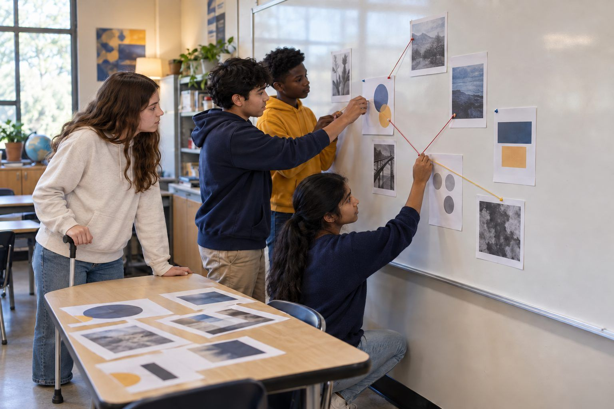

Student learning · Grades 6–8 · 45 minutes
Scary Headline, Second Look
A student and a family member investigate an alarming screen-time headline together using lateral reading, learning to tell a real finding from a scare, and that "linked to" almost never means "caused by."
Parents and kids both see frightening screen-time headlines, and both tend to react before checking. This activity hands families a calmer tool: a second look. Students learn a quick version of lateral reading, stop, find the real source, and check what it actually says, and apply it to screen-time news specifically, because that is a topic where headlines routinely outrun the evidence. They practice spotting the gap between "a study linked heavy screen use to lower grades" and "screens wreck your brain," and they learn why a feed, or a chatbot summarizing the news, can make the scary version travel faster than the careful one. Then the student teaches the move to a family member at home by investigating a real screen-time headline together. The stance is balanced throughout: the goal is not to decide screens are harmless or harmful, but to read claims about them honestly, notice correlation versus causation, and talk about what the evidence can and cannot support.
In this packet
- Handout A: The Second-Look Routine (checklist)
- Handout B: Three Screen-Time Stories (reading)
- Handout C: Family Second Look (worksheet)
TCEA ELE indicators
- S2.2 I can identify trustworthy sources of information on the internet.
- AI4.1 I know how to promote critical thinking skills in relation to AI-generated information.
- AI4.2 I can teach others to question and verify AI outputs.
- S3.2 I can communicate my ideas clearly to others.
Full facilitator guide: mglearn.github.io/eles/activities/scary-headline-second-look.html
Handout A for Scary Headline, Second Look
The Second-Look Routine
Keep this card handy. Run these steps before you believe or share any scary headline, about screens or anything else.
| Did it | Skipped it | |
|---|---|---|
| STOP: Notice my reaction. Scary or exciting headlines are built to make me share fast. | ||
| SOURCE: Who is really making this claim, a researcher, a reporter, an ad, a stranger's post? | ||
| TRACE: Find the actual study or report. What did it really measure, and in how many people? | ||
| LINKED OR CAUSED?: Did they find a connection, or prove one thing made the other happen? | ||
| CHECK THE EXTREME WORDS: destroys, proves, totally fine, rewires. Does the study support them? | ||
| WHO BENEFITS?: Who gains if I share the scary (or the reassuring) version without checking? | ||
| DECIDE: What can the evidence actually support? Say that, not more. |
Notes
Handout B for Scary Headline, Second Look
Three Screen-Time Stories
For each story, highlight the causal words in the headline. Then, using the source note, write what the study ACTUALLY found and whether it showed a LINK or a CAUSE.
1STORY 1 — Headline: "SCREENS ARE REWIRING CHILDREN'S BRAINS, EXPERTS WARN." Source note: The claim traces to a fictional review by the Maple Hollow Child Health Collaborative that pooled surveys of about two million children. It found that children who used screens more tended to score a little lower on school tests. The researchers wrote plainly that this was an association and that they could not tell whether screens caused the lower scores, since struggling students may also use screens more.
2STORY 2 — Headline: "Study PROVES phones cause teen depression." Source note: The claim comes from a fictional twin study by BrightPath University of 20,000 twins. It found some screen uses were connected to anxiety and depression, but when researchers compared twins raised in the same family, the connection mostly disappeared. Their conclusion: shared family background explains much of the link, and the study does not prove phones cause depression.
3STORY 3 — Headline: "RELAX: New research says screen time is totally fine for kids." Source note: The claim comes from a fictional eight-year study by the Rio Verde Institute that followed 1,500 children. Some heavier screen users did better on certain thinking-speed tests as teens. The authors cautioned that one study cannot clear screens of all concerns, especially around sleep, and that what kids do on screens matters more than the raw minutes.
4WRITE YOUR ANSWERS: For each story, finish these two sentences. "The study actually found that ____." "This was a (link / cause) because ____." Then rewrite each headline as one accurate, non-exaggerated sentence.
5DISCUSS: Which headline overstated the finding the most? Did any headline overstate in the reassuring direction? How could the same study be reported honestly?
Handout C for Scary Headline, Second Look
Family Second Look
Do this at home. YOU are the teacher: walk a family member through the second-look routine on a real screen-time headline. Family note: your child is practicing how to check a claim before believing or sharing it. Please do this one together.
The real headline we investigated (and where we saw it):
SOURCE: Who is really making the claim?
TRACE: What did the actual study or report measure, and in how many people?
LINKED OR CAUSED? Which is it, and how can you tell?
Would we have shared this headline BEFORE the second look? What do we believe about it now?
One thing the family member learned from you about checking a claim: